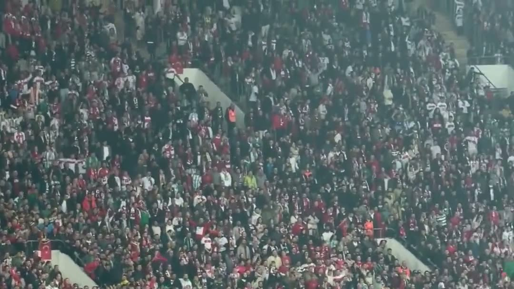
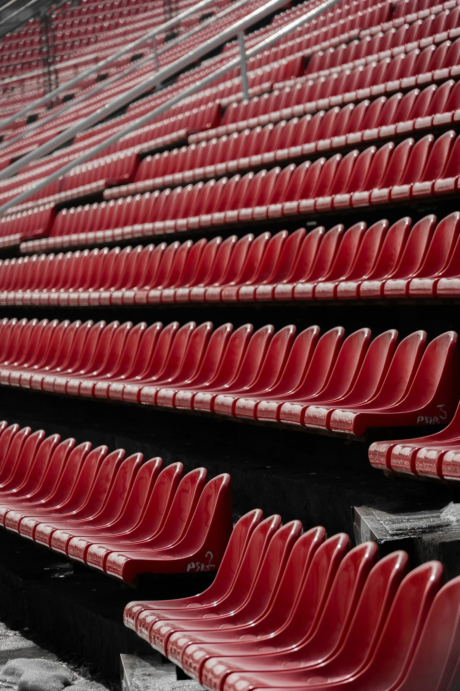
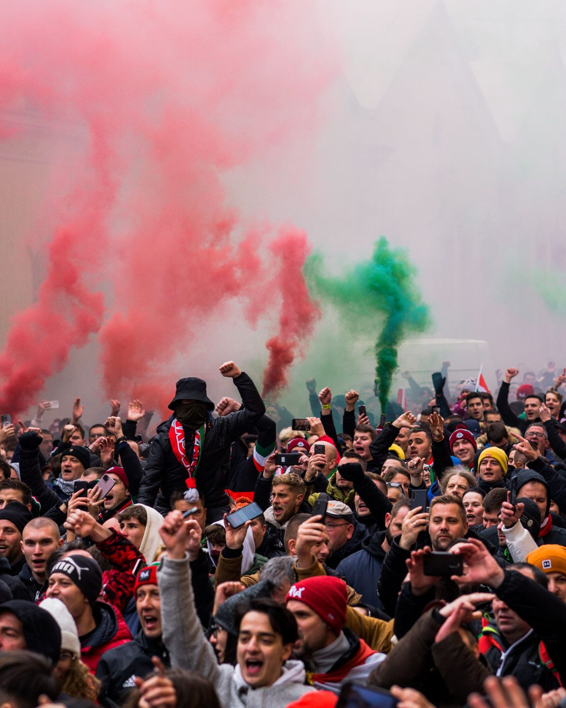
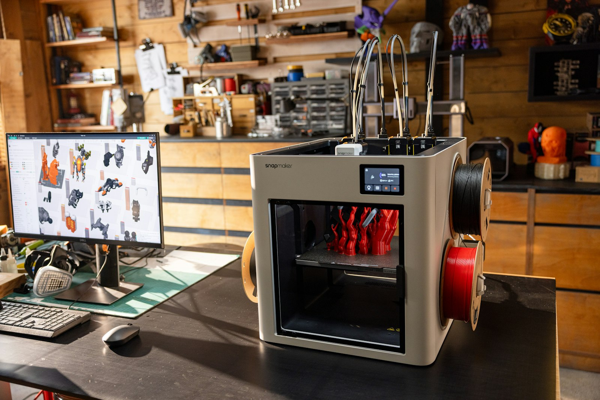

O Benfica não se explica. Vive-se.
Uma bancada para todos os que vivem esta paixão, dentro e fora do estádio.
Um lugar que também é teu.
Estejas onde estiveres.
Não é preciso estar na Luz para estar na bancada. Basta sentir.
A Bancada Encarnada nasceu de uma ideia simples: há benfiquistas em todo o lado, e nem todos cabem no estádio. No sofá de casa, no café da terra, no grupo de amigos, a milhares de quilómetros. A paixão é a mesma. Faltava um sítio para a juntar.
Somos adeptos, não somos o clube. Aqui partilham-se memórias, vota-se no que vem a seguir e criam-se peças pensadas para quem vive isto todos os dias. Se és benfiquista, já tens lugar marcado.
- 01
Partilhar
Histórias, fotografias e memórias de quem vive o clube. O mural é da comunidade.
- 02
Decidir
As próximas peças escolhem-se em conjunto. Cada semana há uma pergunta à bancada.
- 03
Levar contigo
Peças originais, feitas uma a uma em Portugal, para a secretária, a mochila e a mesa do café.

Aqui a bancada também decide.
Uma pergunta por semana, uma memória em destaque e a novidade que vem a seguir. Atualizamos todas as segundas-feiras.
Sondagem
Ainda está por escrever.
A primeira memória em destaque vai ser de alguém da bancada. Pode ser a tua: conta-nos lá em baixo, no mural.
Partilhar uma memóriaPeças para quem vive isto todos os dias.
Três peças disponíveis agora, feitas uma a uma em Portugal, e uma loja organizada em quatro categorias. Sem carrinho: a encomenda é uma conversa.


As fotografias são vossas.
O mural abre com as primeiras fotografias que a bancada enviar. Cachecóis de família, a caneca na secretária, a televisão do café, a bandeira na varanda do outro lado do mundo.
O primeiro lugar do mural é teu.
Envia uma fotografia tua com uma frase sobre o momento. Vemos cada uma antes de entrar, e só publicamos com a tua autorização e o nome que escolheres.
Podes pedir a remoção da tua fotografia a qualquer momento, por mensagem. Não usamos as fotografias do mural em publicidade sem te perguntar antes.
Feito aqui, uma de cada vez.
Não há armazém nem stock. Cada peça nasce quando a pedes, em Portugal, e passa pelas nossas mãos antes de chegar às tuas.
- 01 · Impressão
Camada a camada
Cinco a sete horas por caneca. O relevo nasce aqui.

02 · MontagemEncaixe e copo
A placa do emblema encaixa no corpo. O copo de inox entra por último.
 03 · Controlo
03 · ControloÁgua a ferver
Cada caneca é testada antes de ser embalada. Sem exceções.
- 04 · Embalagem
Com o teu nome
Caixa, cartão de cuidados e envio registado.
A impressão 3D é como fazemos. O porquê és tu. Permite-nos fazer séries pequenas, gravar o teu nome e mudar a coleção conforme a bancada pedir, sem mínimos de fábrica. As próximas peças de roupa e as canecas de cerâmica vão ter o mesmo cuidado, com outras técnicas.
Marca o teu lugar. É gratuito.
O Clube é a lista de quem quer estar por dentro. Sem quotas, sem compromisso, sai quando quiseres.
- Participas na escolha das próximas peças, antes de irem para produção.
- Conheces os lançamentos e as edições numeradas antes de toda a gente.
- Recebes as novidades da comunidade: memórias do mural, resultados das sondagens, bastidores.